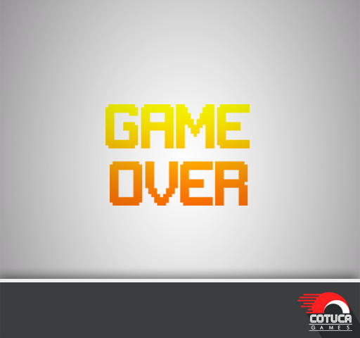

SOBRE
JOGOS
SNAKE
Atualize seu browser para ver o CANVAS

Iniciar
Reiniciar
*JOGUE USANDO W, A, S e D
Pontuacao: 0
Pontuacao anterior: 0
DESCRIÇÃO
Jogue o famoso game "Serpente" que fez sucesso na década de 80! Seu objetivo é pegar o máximo de maçãs que conseguir, sempre tendo cautela para não esbarrar em uma parede ou em sua prórpia cauda! Hora de rastejar!